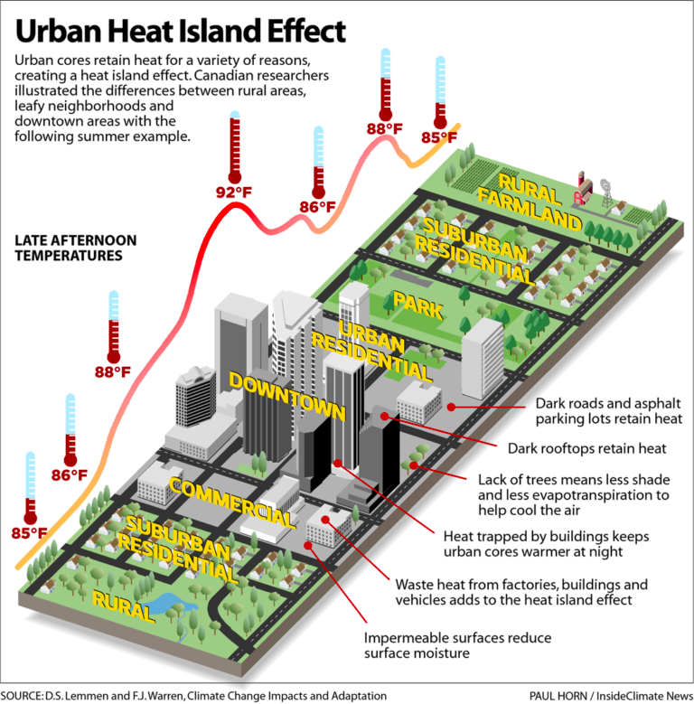
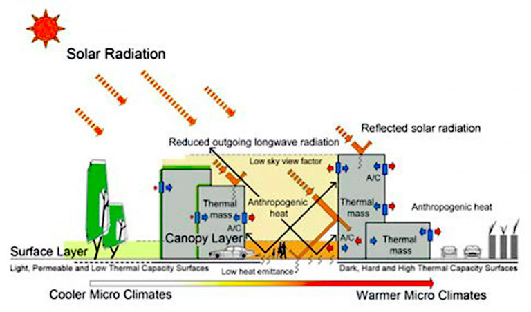
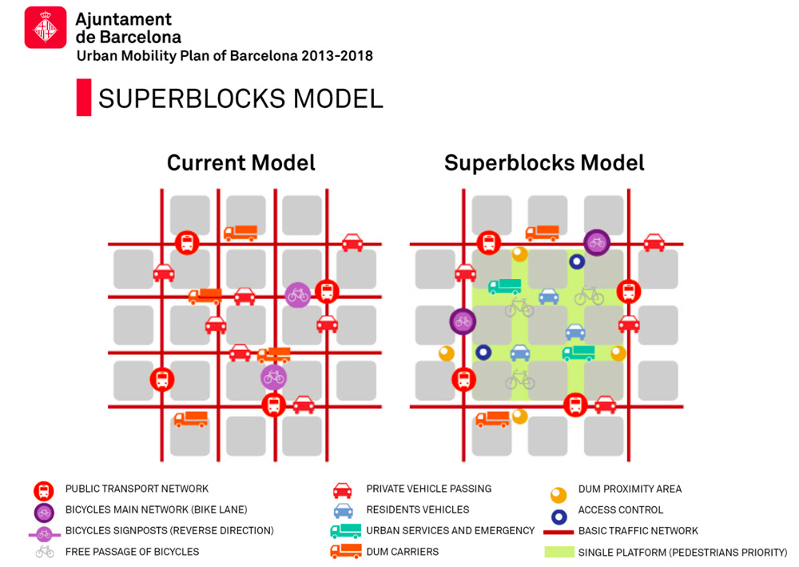

8 Temperature and policy
8.1 Summary
This week's lecture we will learn aboutUrban Heat Island (UHI) phenomenom through several policy case studies in different cities and countries.
8.1.1 What is Urban Heat Island?
Urban areas obtain comparatively higher atmospheric and surface temperatures than surrounding rural areas due to human activities

Source:EARTH.ORG
There is two main factors
More dark surfaces that retain heat
Less vegetation that cools the environment

Source here:Cidco Smartcity
Basic solution is making more green spaces in urban area
In Barcelona, they have implemented ’Superblocks’ startegy
Increase pedestrian traffic
Reduce nitrogen oxide
Reduce noise pollurion
Increase business

Source:Beating the Heat: A Sustainable Cooling Handbook for Cities. Image: regenerativedesign.world